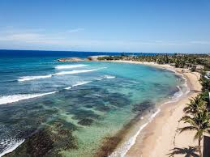
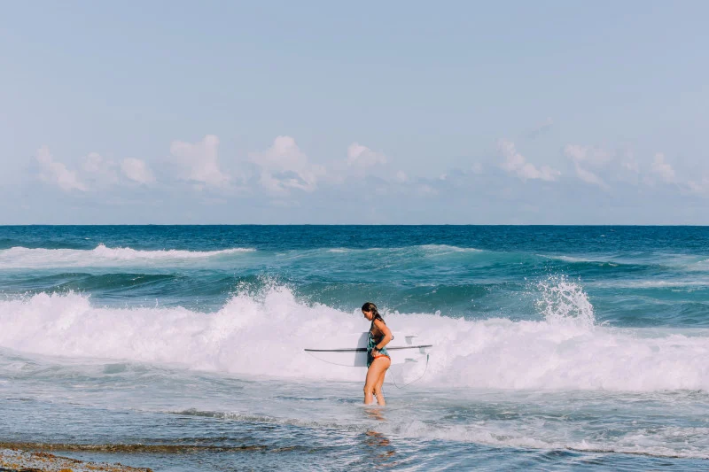
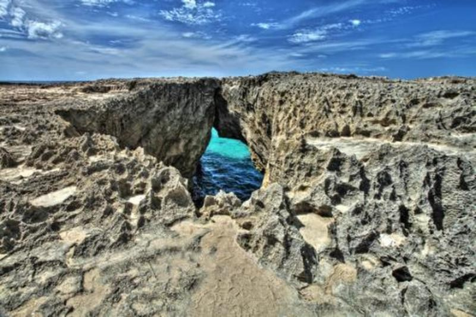
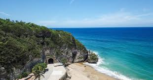

Playa Jobos
Playa Jobos es una de las playas más conocidas de Isabela. Es popular por su ambiente turístico y por ser un área frecuentada por surfistas.
El Jardín del Noroeste
Playas, historia, cultura y naturaleza en la costa noroeste.
El municipio de Isabela ofrece diversos atractivos turísticos que combinan naturaleza, cultura e historia. Sus playas, áreas naturales y lugares emblemáticos reflejan la belleza de la costa noroeste de Puerto Rico y lo convierten en un destino ideal para visitantes y turistas.

Playa Jobos es una de las playas más conocidas de Isabela. Es popular por su ambiente turístico y por ser un área frecuentada por surfistas.

Playa Middles es reconocida por su oleaje y su ambiente natural. Es un lugar visitado por personas que disfrutan el surf y los paisajes de la costa.

El Pozo de Jacinto es una formación natural localizada en el área de Bajuras. Además de su belleza, está relacionada con una leyenda local muy conocida.

El Túnel de Guajataca es un antiguo túnel ferroviario que conecta la historia del ferrocarril en Puerto Rico con el paisaje costero de la zona.